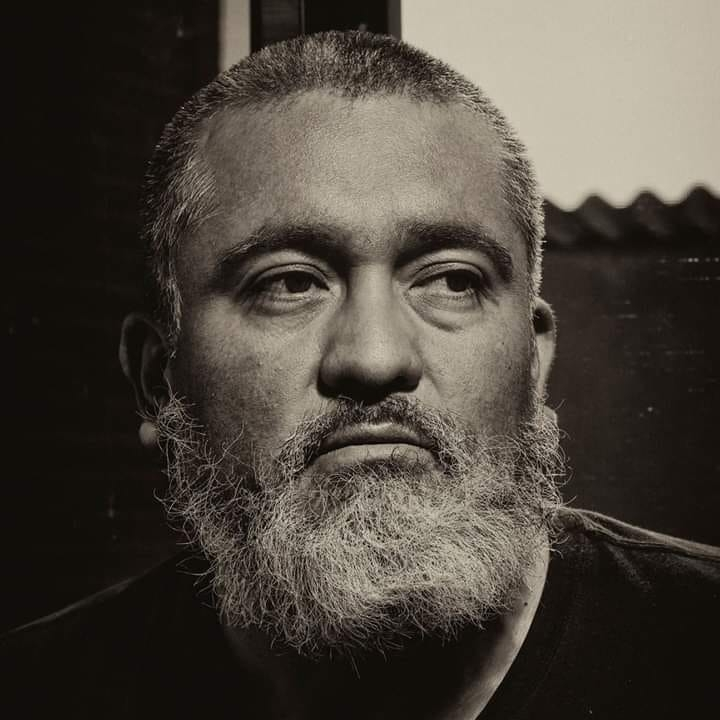

CV - Roberto Gabriel Jiménez García

Descripción Personal
Nací un 7 de febrero de 1973, en la ciudad de Cuernavaca Morelos; México. Aunque estudie una carrera de ingeniería la dejé trunca y nunca la termine. Me apasionaba la programación y ahora que quiero retomar me encuentro una tecnología muy cambiada y sobre todo en el área de informática. He sido la mayor parte del tiempo autodidacta y me apasiona la fotografía y el ajedrez.
Habilidades
- Lógico - Matemáticas
- Trabajo en equipo
- Habilidades de aprendisaje
- Habilidades pedagógicas
Hobbies
- Fotografía (Ahora mi profesión)
- Ajedrez
- Lectura
- Dibujo y Pintura
- Cartonería
Motivos para estudiar en Soy Henry
El motivo principal es continuar con algo que dejé inconcluso y mejorar mi situación económica y tener un nivel de vida de mayor calidad.
Mis espectativas es aprender las nuevas tecnologías de la mano de profesionales en el ramo y así poder adquirir un buen empleo.